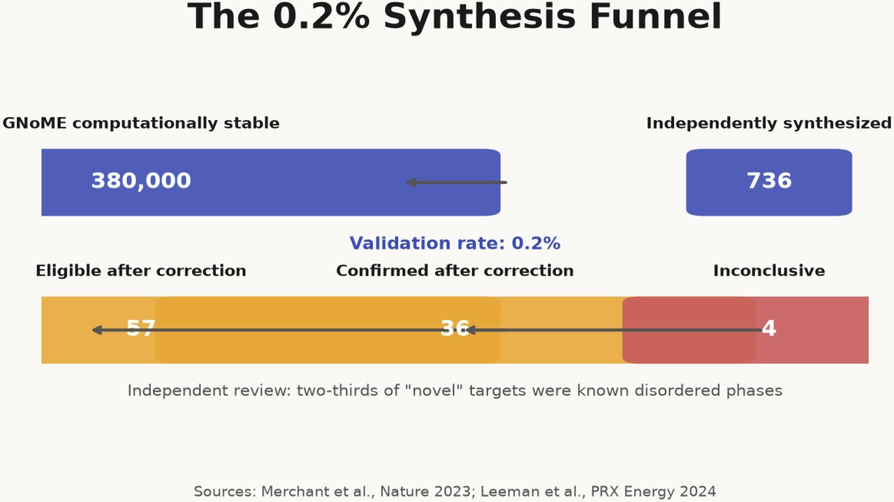
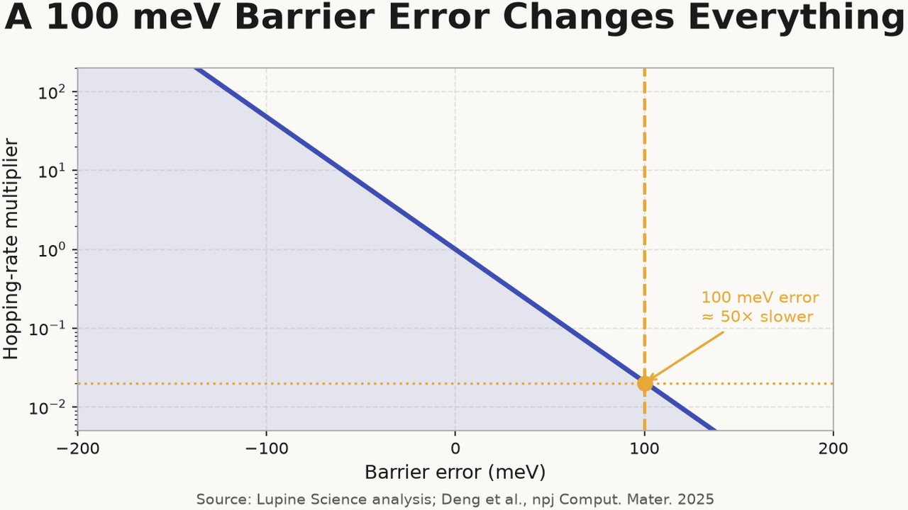
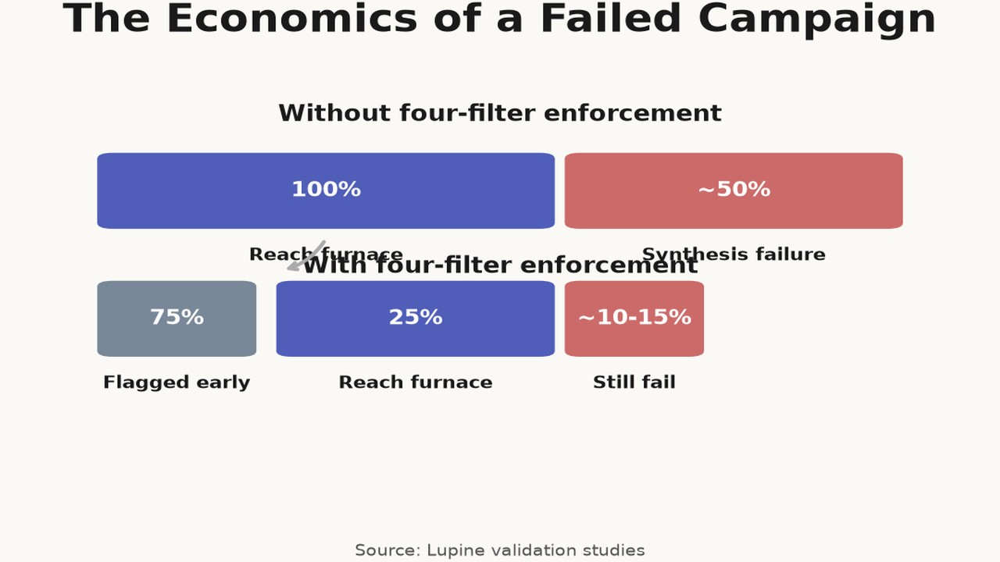
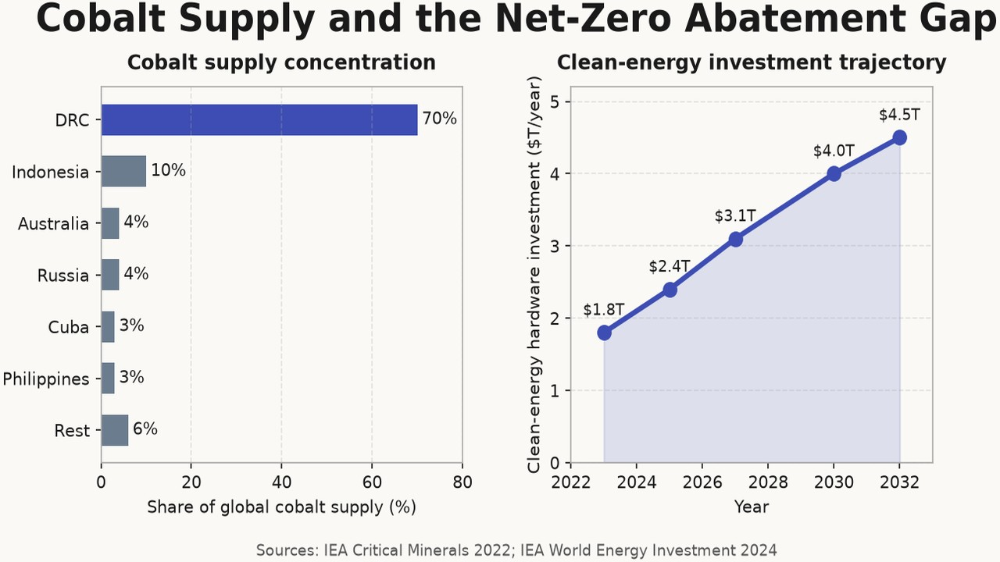
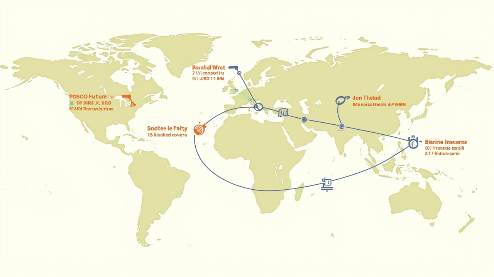

The 0.2% Synthesis Problem
article
Why most computationally predicted materials never reach a synthesis vessel, and why that matters for climate-critical materials.


Computational materials science is producing candidates faster than laboratories can validate them. Google DeepMind’s GNoME reported 380,000 computationally stable inorganic structures, yet only 736 had been independently synthesized by late 2023 — a 0.2% validation rate[1]. The A-Lab autonomous synthesis facility reported synthesizing 41 of 58 targets, but independent critique found that two-thirds of its “novel” targets were already-known disordered phases, collapsing the true discovery rate toward zero[2].
The headline numbers are symptoms, not accidents. They point to a consistent set of bottlenecks between a predicted crystal and a made material. If those bottlenecks remain unaddressed, the climate cost will be measured in gigatonnes of CO₂ and years of missed deployment windows. Batteries alone are directly linked to roughly 20% of the CO₂ reductions required by 2030 and indirectly to another 40%[3]. Clean-energy hardware investment must rise from $1.8 trillion in 2023 to roughly $4.5 trillion per year by the early 2030s if net-zero targets are to stay within reach[4]. Materials discovery is not moving too slowly in absolute terms; it is moving too slowly relative to the scale and urgency of the problem.
Lupine Science occupies the gap between prediction and synthesis. This article explains why the gap exists and why closing it requires a correction and verification layer rather than a larger generator.

Why most predicted crystals disappear
A recent study that tracked the fate of 736 predicted inorganic materials found that only 0.2% were made and structurally confirmed. The low number is not primarily a failure of synthesis skill. It is the result of four filters that structure generators and fast predictors routinely fail to apply.
Filter 1: Computed stability is not synthesizability
A structure can be on the convex hull of thermodynamic stability and still be unreachable by any practical chemical route. Most screens rank candidates by DFT energy or a machine-learned surrogate of it, but the real question is whether a precursor path exists that converges to the target rather than to a competing phase, an amorphous intermediate, or decomposition. Real synthesis routes routinely produce metastable phases that convex-hull-only screening eliminates prematurely.
Filter 2: Force-field accuracy away from equilibrium
Most screening uses universal machine-learning interatomic potentials (uMLIPs) that have never seen the reactive precursors or the real furnace environment. These models are trained on near-equilibrium bulk configurations and systematically soften the potential energy surface in under-coordinated environments such as surfaces, vacancies, and transition states[5]. The consequence is defect and migration-barrier errors that can invert the ranking of candidate materials. A 100 meV barrier error changes the hopping rate by roughly 50× at room temperature, enough to misclassify a fast-ion conductor as an insulator.

Filter 3: Disorder and non-stoichiometry
Many real materials are not perfectly ordered crystals. Cation disorder, oxygen vacancies, stacking faults, and amorphous surface layers dominate functional behavior, especially in battery cathodes and solid electrolytes. Structure generators usually emit ideal unit cells; predictors usually evaluate them as written. The resulting candidates fail when the synthesized powder is not the predicted crystal.

Filter 4: The cost of a failed campaign
Each filter compounds the next. A candidate that passes an energy screen but fails in synthesis wastes weeks of lab time and thousands of dollars. In our own validation studies the failure rate is closer to 40–60% than 99.8%, but even that rate is too high for high-throughput screening to be economically rational. We estimate that three-quarters of all predictions would drop out before reaching a factory if these four filters were enforced globally.

The climate math
The cost of leaving the bottleneck unsolved is not academic. Cobalt-free cathodes are the highest-leverage near-term target because cobalt supply is concentrated: the Democratic Republic of Congo produces roughly 70% of global cobalt[6]. Any battery chemistry that removes cobalt while preserving energy density and cycle life removes a geopolitical and ethical constraint on electrification.

More broadly, the International Energy Agency estimates that the clean-energy technologies required for net-zero emissions must abate tens of gigatonnes of CO₂ by 2050[7]. Our internal climate analysis suggests that the five material areas we are pursuing could, if fully deployed, abate 5–12 Gt CO₂ yr⁻¹—roughly 10–25% of what the IEA says clean-energy hardware must remove by 2050.
The window is narrow. A material discovered in 2035 can still shape 2040 deployment; one discovered in 2045 cannot. The difference is measured in cumulative emissions that no later innovation can recover.
What correction looks like
Closing the gap requires moving from “stable on paper” to “synthesizable in practice.” Lupine’s approach is to learn an error field around each environment rather than to train a bigger model. The field measures how a uMLIP deviates from reference data as a function of local atomic coordination. That correction is applied at runtime with analytic forces, so molecular dynamics and structure relaxations follow proper gradients. The result is a ranked list in which the top candidates are far more likely to survive synthesis, and in which candidates that cannot be rescued are flagged before a furnace is turned on.

The approach is already being validated by the market. POSCO Future M has completed development of lithium-manganese-rich cathode materials and is preparing mass production in 2025[8]. General Motors and LG Energy Solution aim to begin commercial production of prismatic lithium-manganese-rich cells by 2028[9]. Solid Power is supplying BMW with automotive-scale solid-state cells for qualification testing[10]. Factorial Energy has delivered 100+ Ah quasi-solid-state cells to Mercedes-Benz, which is now road-testing a modified EQS sedan with the technology[11]. These are not laboratory curiosities; they are the endpoints that a corrected screening pipeline must feed.

From predictions to partners
Predictions are necessary but not sufficient. The path from a corrected energy landscape to a commercial material runs through named experimental collaborators who can synthesize, characterize, and scale the top candidates. The next article in this series turns from the diagnosis to the method: how Lupine measures the environment error field, why the field is measured rather than learned, and how machine-checked proof prevents false positives from propagating through an autonomous pipeline.

Footnotes
A. Merchant et al., “Scaling deep learning for materials discovery,” Nature 624, 80–85 (2023). https://doi.org/10.1038/s41586-023-06735-9 ↩︎
N. J. Szymanski et al., “An autonomous laboratory for the accelerated synthesis of novel materials,” Nature 624, 86–91 (2023); J. Leeman et al., “Challenges in High-Throughput Inorganic Materials Prediction and Autonomous Synthesis,” PRX Energy 3, 011002 (2024). https://doi.org/10.1038/s41586-023-06734-7; https://doi.org/10.1103/PRXEnergy.3.011002 ↩︎
International Energy Agency, Batteries and Secure Energy Transitions, IEA, 2024. ↩︎
International Energy Agency, World Energy Investment 2024, IEA, 2024. ↩︎
B. Deng et al., “Systematic softening in universal machine learning interatomic potentials,” npj Computational Materials 11, 9 (2025). https://doi.org/10.1038/s41524-024-01500-6 ↩︎
International Energy Agency, The Role of Critical Minerals in Clean Energy Transitions, IEA, 2022. ↩︎
International Energy Agency, Net Zero by 2050: A Roadmap for the Global Energy Sector, IEA, 2021. ↩︎
POSCO Future M, “POSCO Future M to lead entry-level and standard EV markets with LMR cathode materials,” press release, June 2025. ↩︎
General Motors, “Why LMR batteries will change the outlook for the EV market,” GM Newsroom, May 2025; LG Energy Solution / GM, Battery Innovation of the Year, The Battery Show North America, October 2025. ↩︎
BMW Group / Solid Power, joint development agreement and Series B investment announcement, 2021; BMW i7 ASSB demo-vehicle road testing reported 2025. ↩︎
Factorial Energy / Mercedes-Benz, solid-state battery cell development and EQS road-test announcements, 2023–2025. ↩︎